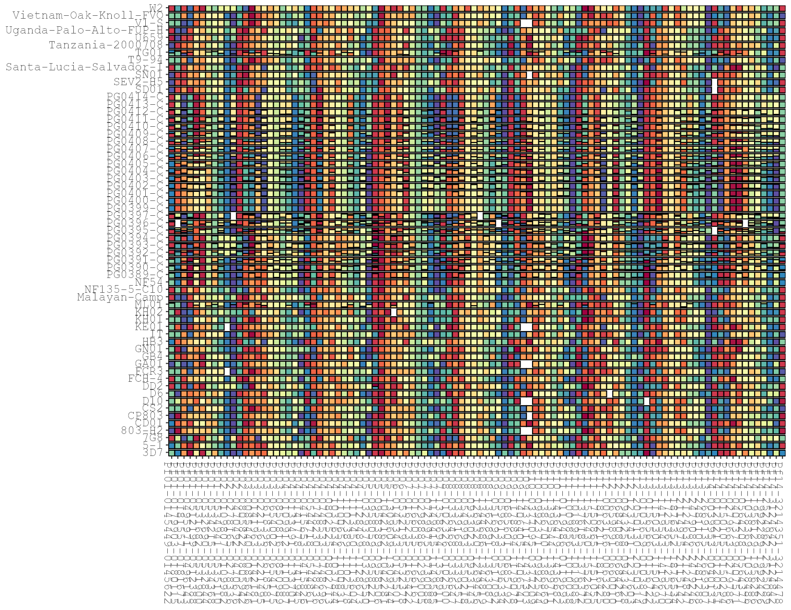
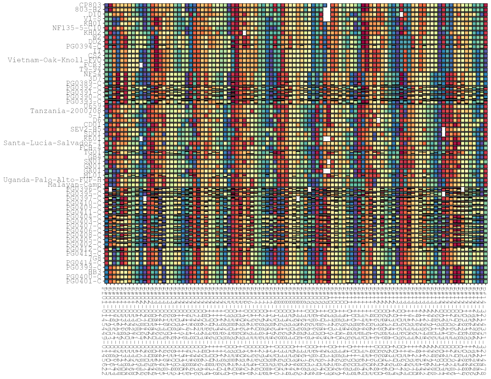
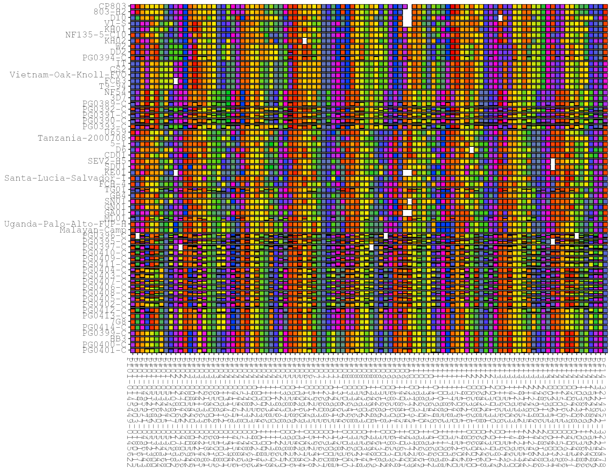

version v2.0.0
A collection of tools in R to create haplotype “rainbows” from targeted amplicon (microhaplotype) sequencing data. Unlike SNP barcodes, which are binary, these plots handle arbitrary within-sample haplotype composition. Columns are targets, rows are samples, and each cell shows the within-sample relative abundance of each haplotype, coloured so that the dominant haplotype hue rotates across targets — producing the characteristic “rainbow”.
v2.0.0 is a breaking change. The old standalone functions (
prepForRainbow,genRainbowHapPlotObj, …) have been replaced by a single R6 class,HaplotypeRainbow, that carries your column mapping so you only set it once. Column defaults now follow the PMO convention rather than SeekDeep.
Documentation
📖 Full documentation, function reference, and a gallery of worked examples live on the package website:
https://nickjhathaway.github.io/HaplotypeRainbows/
The Articles cover getting started, colours & plot styles, sample & target metadata, clustering & splitting plots, and saving & interactivity.
Install
# most recent release
devtools::install_github('nickjhathaway/HaplotypeRainbows')
# development branch
devtools::install_github('nickjhathaway/HaplotypeRainbows@develop')Input
The tools need a minimum of 4 columns:
- Sample name
- Target / locus name
- A within-target haplotype identifier
- A within-sample relative abundance (raw counts are fine — they are normalised internally)
The column defaults follow the Portable Microhaplotype Object (PMO) convention:
| Role | Default column |
|---|---|
| Sample name | library_sample_name |
| Target / locus name | target_name |
| Haplotype identifier | seq |
| Relative counts | reads |
You can override any of these when constructing the object.
Usage
Everything runs through the HaplotypeRainbow R6 class. Transforming methods (prep(), sort_by_clustering(), set_sample_order(), sort_alphabetical()) mutate the object and return it, so they can be chained; plot() returns a ggplot object you can print, ggsave() or hand to plotly::ggplotly().
library(HaplotypeRainbows)
# load example data (uses the older SeekDeep column names)
data("pfisolateExample")
# construct with your column mapping (only needed once)
rb <- HaplotypeRainbow$new(
pfIsosHeomeV1,
sample_col = "s_Sample",
target_col = "p_name",
popuid_col = "h_popUID",
rel_abund_col = "c_AveragedFrac"
)
# prep + plot
rb$prep(sort = "population_rank")
rb$plot()If your data already uses the PMO column names, no mapping is needed:
rb <- HaplotypeRainbow$new(my_pmo_allele_table) # or haplotype_rainbow(my_pmo_allele_table)
rb$prep()$plot()The colours have meaning within each column (same colour = same haplotype for that target), but not across columns. The dominant-haplotype hue steps across targets with a period (default 11) to create the rainbow.

Sorting samples
Order samples so that similar samples (by haplotype sharing) sit next to each other using hierarchical clustering (ward.D2):
rb$prep(sort = "population_rank")$sort_by_clustering()
rb$plot()
Other ordering options:
rb$sort_by_clustering(by_major_allele = TRUE) # cluster on the major allele only
rb$set_sample_order(c("3D7", "HB3", "...")) # explicit order
rb$sort_alphabetical() # defaultCustom colours
Supply your own palette to plot():
rb$plot(colors = c("#F50300","#FF6E00","#FFEB01","#00CA1E","#0241FE","#FE00D4"))
Haplotype ordering
prep(sort = ...) controls how haplotypes are ordered within each cell:
-
"population_rank"— order haplotypes by population rank (default) -
"within_sample_freq"— order haplotypes by within-sample fraction
Shade plots
Instead of a rotating rainbow, prep_shade() colours each target with shades of a per-target base colour. plot() automatically uses the shade colours:
rb$prep_shade(min_pop_size = 1)
rb$plot()Notes
- Interactive tooltips:
plot()carries the sample, target, haplotype and abundance values as extra aesthetics soplotly::ggplotly()shows them on hover. - Migrating from v1.x: the class methods map onto the old functions (
prep()→prepForRainbow*,plot()→genRainbowHapPlotObj*,sort_by_clustering()→resort_prepped_samples_by_clustering).